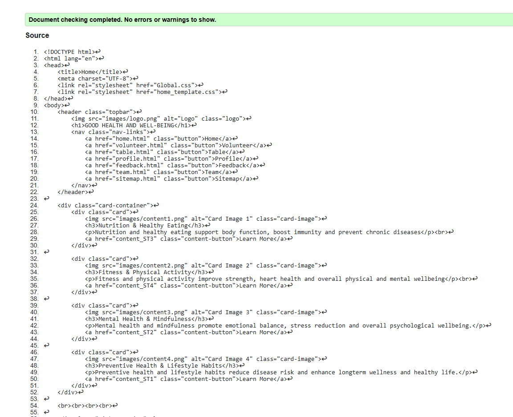
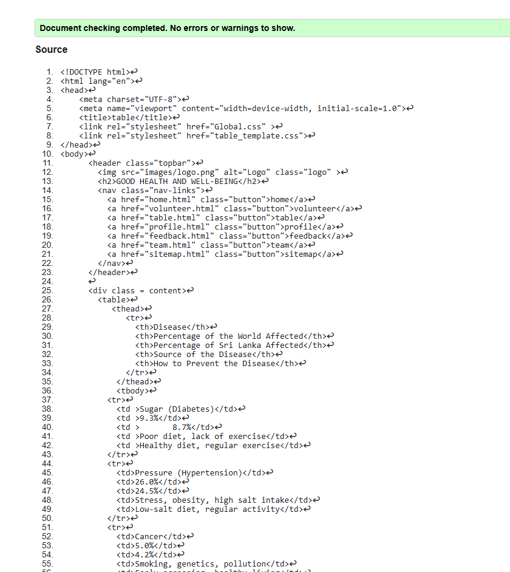
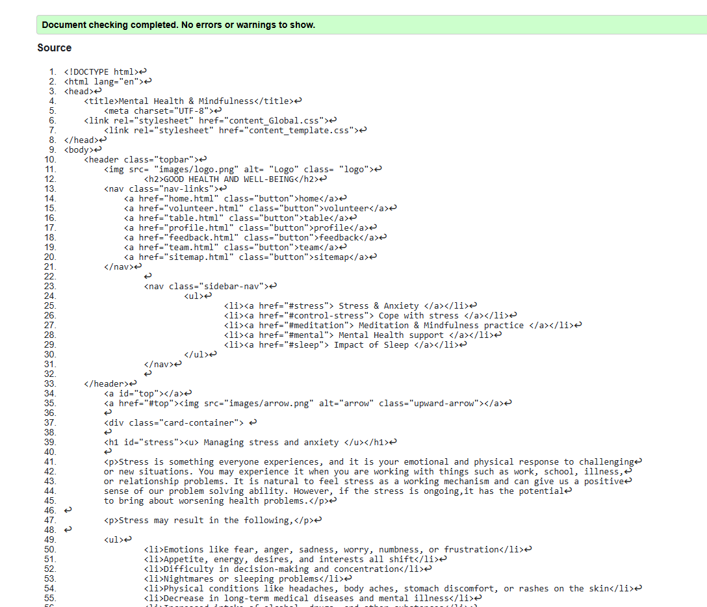

home Page validation report
During validation, I found issues like the incorrect use of the button attribute in <#a> tags and nesting <#button> inside <#a>, which are not allowed in HTML. I fixed these by styling anchor tags as buttons using CSS. I also corrected table row warnings by ensuring each row had the correct number of <#td> cells and removed a stray closing <#/div> tag. These fixes improved the structure, accessibility, and compatibility of my pages.

Back to Page Editor page
Include a link back to the corresponding section of the Page Editor.
Table Page validation report
During validation table page, I did not found any issues in this html code.But i found indentation issues.

Back to Page Editor page
Include a link back to the corresponding section of the Page Editor.
Content Page validation report
During validation content page,I did not found any issues.

Back to Page Editor page
Include a link back to the corresponding section of the Page Editor.